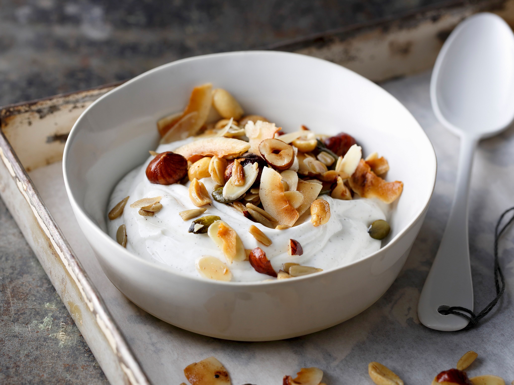

Skyr is a traditional Icelandic dairy product, similar to yogurt, that was enjoyed by Vikings. It is high in protein and can be enjoyed with a variety of toppings
Instructions
Divide the skyr among four serving bowls
Drizzle each bowl with honey and top with chopped nuts and berries, if desired